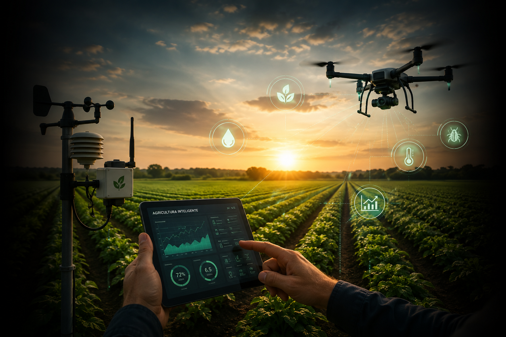

Tecnologias sustentáveis que garantem
produtividade e eficiência em conjunto,
além de proteger o meio ambiente e a
qualidade de vida das futuras gerações.

A agricultura de precisão é um modelo de gestão agrícola baseado na coleta e análise de dados para otimizar a produção no campo.
Em vez de tratar toda a propriedade da mesma forma, essa abordagem reconhece que diferentes áreas de uma lavoura podem apresentar necessidades distintas de irrigação, fertilização ou controle de pragas.
Utilizando tecnologias como GPS, sensores, drones e imagens de satélite, os produtores conseguem identificar essas diferenças e aplicar recursos de forma mais eficiente. Como resultado, há redução de desperdícios, aumento da produtividade e menor impacto ambiental.
A tecnologia permite que o produtor rural tome decisões mais rápidas e precisas com base em dados confiáveis.
Equipamentos modernos monitoram o desenvolvimento das culturas, identificam problemas antes que se agravem e auxiliam no planejamento das atividades agrícolas.
Além disso, máquinas automatizadas reduzem o tempo necessário para diversas operações, aumentando a eficiência da produção. Com isso, é possível produzir mais utilizando os mesmos recursos ou até mesmo menos recursos do que anteriormente.
Os dados são considerados um dos recursos mais valiosos da agricultura moderna.
Informações sobre clima, umidade do solo, desenvolvimento das culturas e condições ambientais permitem compreender melhor o funcionamento da propriedade rural.
Com esses dados, os produtores conseguem prever problemas, reduzir riscos, planejar investimentos e melhorar o aproveitamento dos recursos disponíveis. Quanto maior a qualidade das informações coletadas, maior tende a ser a eficiência da gestão agrícola.
A Internet das Coisas, conhecida pela sigla IoT, consiste na conexão de dispositivos inteligentes capazes de coletar e compartilhar informações pela internet.
Na agricultura, sensores instalados em diferentes áreas da propriedade monitoram constantemente fatores como umidade do solo, temperatura e condições climáticas.
Esses dados são enviados automaticamente para plataformas digitais, permitindo que os produtores acompanhem a situação da fazenda em tempo real e tomem decisões mais rápidas e precisas.
Os drones revolucionaram a forma como as propriedades rurais são monitoradas.
Equipados com câmeras de alta resolução e sensores especializados, eles conseguem sobrevoar grandes áreas em poucos minutos, produzindo imagens detalhadas das lavouras. Essas informações ajudam a identificar focos de pragas, falhas no plantio, áreas com deficiência nutricional e problemas de irrigação.
Além do monitoramento, alguns modelos também realizam pulverizações localizadas, reduzindo o desperdício de produtos agrícolas.
Os satélites oferecem uma visão ampla e contínua das propriedades rurais, permitindo acompanhar o desenvolvimento das culturas ao longo do tempo. As imagens obtidas podem revelar alterações na vegetação, áreas com baixo desempenho produtivo e possíveis sinais de estresse hídrico. Essa tecnologia é especialmente útil para grandes propriedades, onde o monitoramento presencial de toda a área seria difícil e demorado.
Sensores agrícolas são dispositivos capazes de medir características físicas, químicas ou biológicas do ambiente agrícola. Eles podem monitorar a umidade do solo, temperatura, luminosidade, nutrientes disponíveis e diversos outros fatores importantes para o desenvolvimento das plantas. As informações coletadas ajudam o produtor a compreender melhor as necessidades das culturas e a utilizar os recursos de forma mais eficiente.
A irrigação inteligente utiliza sensores, sistemas automatizados e softwares de monitoramento para fornecer água às plantações de maneira precisa. Em vez de irrigar toda a área igualmente, o sistema identifica quais regiões realmente necessitam de água e determina a quantidade ideal para cada local. Isso reduz significativamente o desperdício de recursos hídricos, melhora a produtividade das culturas e contribui para uma agricultura mais sustentável.
Uma fazenda inteligente é uma propriedade rural que utiliza tecnologias digitais para integrar e automatizar diversas etapas da produção agrícola. Sensores, drones, máquinas autônomas, sistemas de monitoramento climático e plataformas de análise de dados trabalham de forma conjunta para fornecer informações em tempo real ao produtor. Essa integração permite maior eficiência operacional, redução de custos e melhor aproveitamento dos recursos naturais.
A inteligência artificial permite analisar grandes quantidades de dados de forma rápida e eficiente. Na agricultura, ela pode identificar padrões relacionados ao desenvolvimento das culturas, prever o surgimento de pragas, recomendar estratégias de irrigação e auxiliar na gestão da propriedade. Em alguns casos, sistemas de IA também são utilizados para controlar máquinas autônomas e otimizar operações agrícolas complexas.
Sim. Muitas tecnologias modernas foram desenvolvidas justamente para aumentar a eficiência do uso dos recursos naturais. Sensores e sistemas inteligentes permitem aplicar água, fertilizantes e defensivos apenas onde são realmente necessários, reduzindo desperdícios e minimizando a contaminação do solo e dos recursos hídricos. Dessa forma, a tecnologia contribui para uma produção mais sustentável e ambientalmente responsável.
A automação agrícola consiste na utilização de equipamentos e sistemas capazes de executar tarefas com pouca ou nenhuma intervenção humana. Máquinas automatizadas podem realizar plantio, irrigação, pulverização e colheita com elevada precisão. Além de reduzir custos operacionais, a automação aumenta a eficiência das atividades e contribui para a padronização dos processos produtivos
As energias renováveis oferecem uma alternativa sustentável para o fornecimento de eletricidade nas propriedades rurais. Fontes como energia solar e eólica reduzem a dependência de combustíveis fósseis e ajudam a diminuir os custos com eletricidade ao longo do tempo. Além dos benefícios econômicos, essas tecnologias contribuem para a redução das emissões de gases de efeito estufa.
As condições climáticas exercem grande influência sobre o desenvolvimento das culturas agrícolas. Sistemas modernos de monitoramento fornecem informações detalhadas sobre temperatura, precipitação, umidade do ar e velocidade dos ventos. Esses dados ajudam os produtores a planejar suas atividades, reduzir riscos e tomar decisões mais seguras diante de possíveis mudanças climáticas.
A tendência é que a agricultura se torne cada vez mais digital, conectada e automatizada. Tecnologias como inteligência artificial, robótica, análise de dados em tempo real e Internet das Coisas deverão desempenhar um papel cada vez mais importante na produção agrícola. O objetivo será produzir mais alimentos utilizando menos recursos naturais, garantindo maior eficiência, sustentabilidade e segurança alimentar para uma população mundial em constante crescimento.
DIAGNÓSTICO DA FAZENDA
Responda as perguntas e descubra qual a tecnologia essencial para a sua fazenda